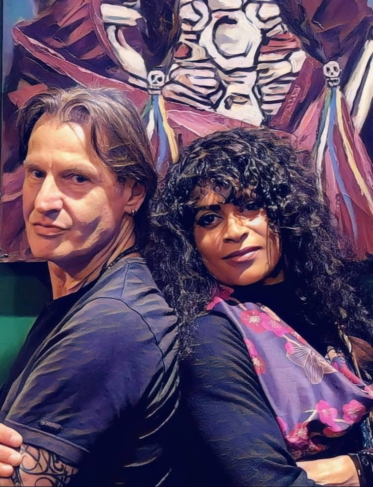
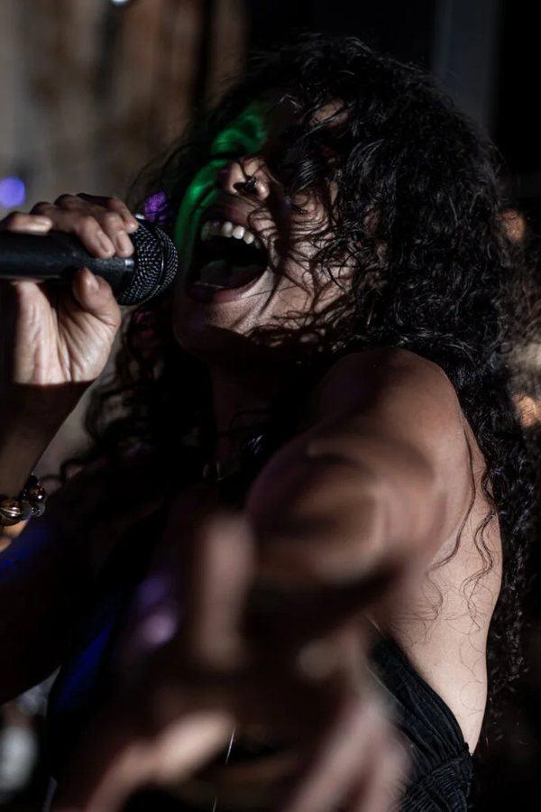
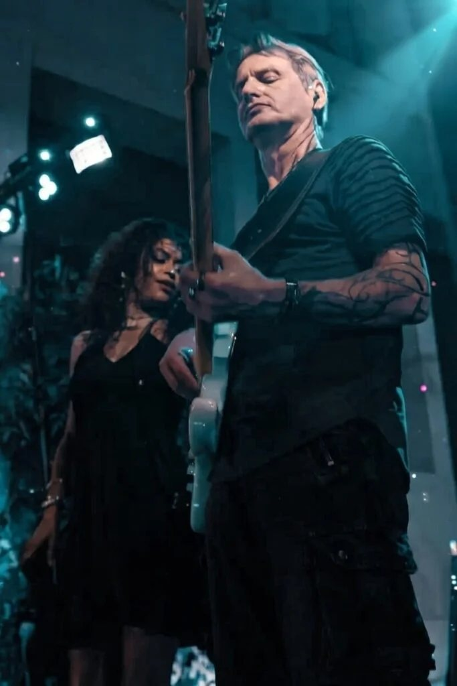
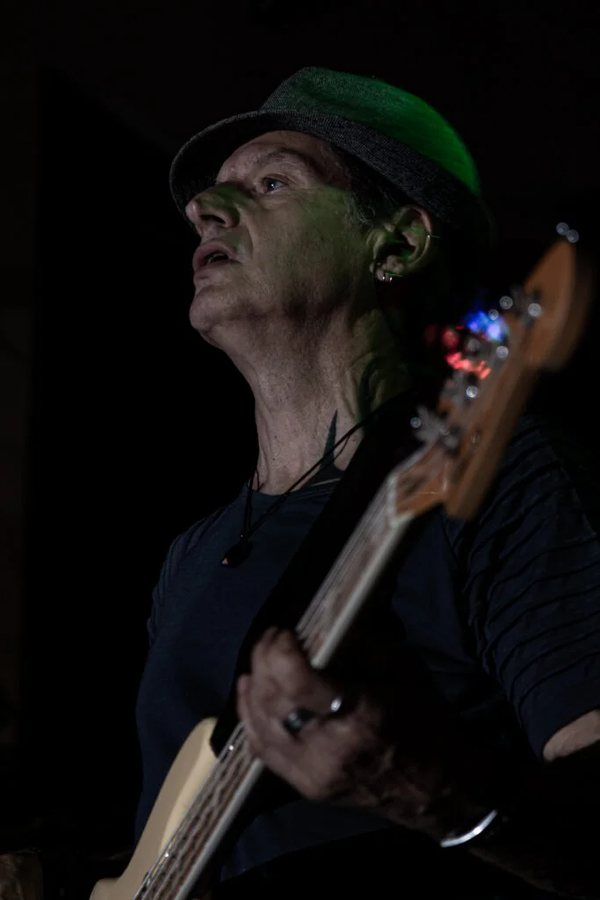
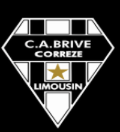
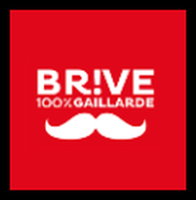
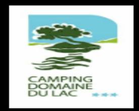
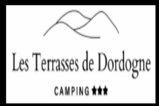

Mariages et réceptions
Une ambiance propice aux échanges au vin d'honneur, qui peut évoluer vers une partie plus dansante quand la soirée s'y prête.

Pop, funk & soul en live. Du vin d'honneur à la piste de danse, Cécile et Pierre font monter l'ambiance au fil de votre soirée.
Le duo
NooN Coverband est né il y a trois ans de la rencontre de Cécile, chanteuse, et de Pierre, bassiste. Deux parcours nourris de soul, reggae, afro-music et funk, réunis pour partager d'inoubliables soirées avec leur public.
Leur répertoire sait être intimiste comme résolument dansant — d'un vin d'honneur tranquille à une soirée placée sous le signe de la fête.
Près de cent-vingt concerts plus tard — campings, bars, marchés de pays, soirées privées — leur succès ne s'est jamais démenti.



NooN en live
Un extrait de scène pour sentir l'ambiance d'une soirée avec Cécile et Pierre. Le son démarre au clic.
La musique
Chaque prestation peut durer jusqu'à deux heures trente non-stop. Les morceaux les plus doux ouvrent la soirée, en fond de repas, avant de laisser place à des titres plus dansants pour faire monter l'énergie.
Influences soul, reggae, afro et funk : un répertoire de variété internationale et française, et une bonne dose de disco-funk 80s, enrichi en continu.
Les morceaux les plus doux ouvrent la soirée, en fond de repas, pour laisser la place aux échanges.
Des titres plus dansants prennent le relais pour faire monter l'énergie jusqu'au dernier morceau.
Variété internationale et française, et une bonne dose de disco-funk 80s : le répertoire s'enrichit en continu.
Vos événements
Quel que soit le format, le duo adapte le déroulé de la soirée à votre projet.
Une ambiance propice aux échanges au vin d'honneur, qui peut évoluer vers une partie plus dansante quand la soirée s'y prête.
Une prestation live pour une commune, un comité des fêtes, un camping ou un lieu de programmation.
Une ambiance adaptée au déroulé de la réception, avec une montée en énergie selon votre projet.
Références
Organisateurs, campings et lieux qui ont déjà accueilli le duo.




Galerie
Contact
Parlez-nous de votre événement, de votre lieu et de la date envisagée.
06 31 94 96 53 contact@soundlightprod.frRéservations gérées par Sound Light Prod.
Une exclusivité SLPsoundlightprod.fr